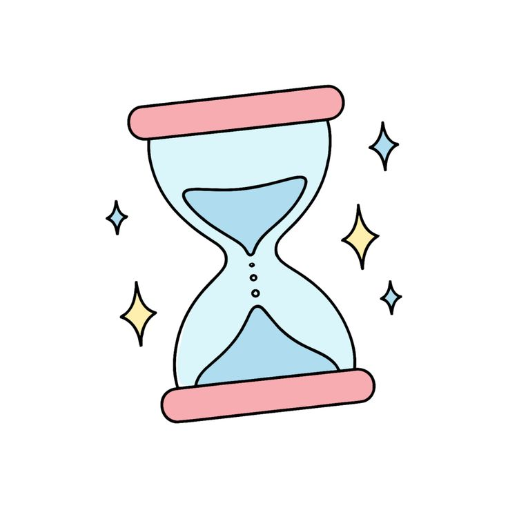

教室時間管理
音量
70%
進入全螢幕
任務時鐘
上下課鐘
靜心番茄鐘
--:--:--
目前任務
尚未設定任務
請在下方設定任務時間
距離結束還有
-- 分鐘
注意事項
請留意老師公告與課堂指示。
請留意老師公告與課堂指示。
任務設定
任務內容
任務時間（24 小時制）
開始
結束
備註
新增任務
測試提示音
資料會自動儲存在這台裝置
注意事項跑馬燈內容
上下課鐘
手動播放鐘聲，或設定每日課表自動打鐘。
上課鈴
下課鈴
上課時間表
自動打鐘
節次
早自習
第一節
第二節
第三節
第四節
午休
第五節
第六節
第七節
上課時間
下課時間
新增課表
匯入
CSV 或 Excel（.xlsx），欄位順序：節次、上課時間、下課時間
專注時間
15:00
第 1 輪
專注累計 0 分鐘
專注
分鐘
休息
分鐘
開始
暫停
重設
跳過